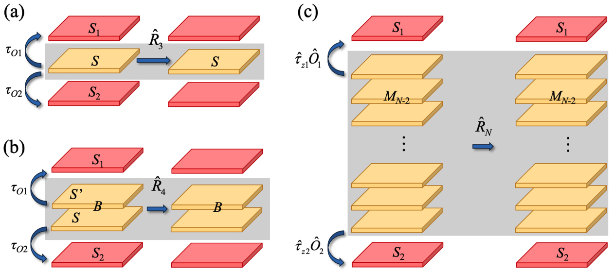
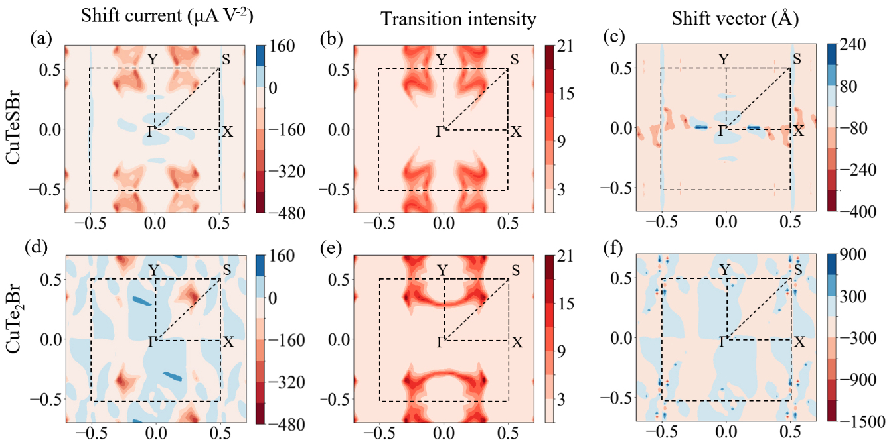

辛嘉琪（Jiaqi Xin）
北京交通大学物理系研究生
Graduate student in Physics, Beijing Jiaotong University
I am a graduate student in physics at Beijing Jiaotong University, advised by Prof. Yaguang Guo. My research focuses on stacking/sliding ferroelectricity, nonlinear optical response, and symmetry-based understanding of crystalline materials.
Selected Publications

Multilayer stacking ferroelectricity in two-dimensional materials with Bravais lattice symmetry: Theory and applications
Highlight:
Establishes a general multilayer stacking ferroelectricity theory and shows that layer number can serve as a design degree of freedom for 2D ferroelectrics and ferroelectric BPVE.
Phys. Rev. B 113, 075310 (2026)
DOI: 10.1103/9tt5-qm26
Stacking ferroelectricity
2D materials
Symmetry

Enhanced theoretical framework for bilayer stacking ferroelectricity
Highlight:
Extends bilayer stacking ferroelectricity theory by refining rotation-operator selection and incorporating symmetry analysis of ferroelectric switching.
Phys. Rev. B 111, 224102 (2025)
DOI: 10.1103/PhysRevB.111.224102
Bilayer stacking ferroelectricity
Ferroelectric reversal

Bulk Photovoltaic Effect in the Elemental Blue Phosphorus-Based Polar Homojunction and Heterojunction
Highlight:
Demonstrates configurable polarity and BPVE in blue phosphorus-based homo/heterojunctions, linking interlayer coupling to shift-current response.
J. Phys. Chem. C 128, 9705 (2024)
DOI: 10.1021/acs.jpcc.4c01207
Bulk photovoltaic effect
Blue phosphorus

Screening two-dimensional pyroelectric materials based on pentagonal chains with large shift current
Highlight:
Screens pentagonal-chain 2D pyroelectric materials and reveals how polar bond design enhances visible-range shift current responses.
Phys. Rev. Mater. 7, 074001 (2023)
DOI: 10.1103/PhysRevMaterials.7.074001
Pyroelectric materials
Shift current
High-throughput screening
Projects
materials-structure-core
面向材料科研软件的结构数据契约、格式读写、哈希与可追溯基础库。
group-theory-operations-toolkit
可供人和程序共同读取的点操作、矩阵、层群映射与群乘法数据工具。
batch-symmetry-checker
在显式容差扫描下批量生成空间群、点群、晶系与失败记录的版本化报告。
See more projects
materials-structure-benchmark
带稳定索引、来源、许可和质量标记的单层与块体结构开放测试库。
weread-calendar
隐私优先、在本地运行的阅读数据整理与月历报告工具。
minimal-academic-homepage
无构建步骤、单文件部署的极简学术主页模板。
wannier-workflow
确定性、无 AI 的 POSCAR→Wannier 工作流与可复现测试契约。
nlo-response-workflow
manifest 驱动的 Python 位移电流与 SHG 计算工作流，面向验证过的 Wannier 模型包。
extension-to-BSF
实验性 C2DB 筛选与双层堆叠工作流，科学验证进行中。
heterojunction
范德华异质结构研究原型（legacy），Python 3 重构规划中。
skyrmion-texture-atlas
磁性 Skyrmion 家族交互纹理图鉴：二维拓扑磁纹理学习与文献对照可视化。
literature-agent
个人科研文献雷达：自动发现、去重、分级、全文获取与每日总览。
zhihu-cli-project
知乎开放平台 Zhihu CLI 实战项目：站点同步 / 选题流水线 / 领域雷达 / 创作复盘 / 数据回流。
Xin-Jiaqi
研究软件作品集、架构、路线图与维护政策（GitHub 个人档案）。
Education & Experience
Education & Experience
2019–2023
北京交通大学，基础学科试点班，本科
2023–2026
北京交通大学，物理系，研究生，导师：郭亚光
2024–2026
北京大学，材料科学与工程学院，访学，王前、孙强教授课题组
Selected Awards
北京市优秀毕业生
国家奖学金 × 2
北京交通大学知行奖学金提名奖
小米特等奖学金
比亚迪奖学金
See more awards
北京交通大学校级三好研究生 × 2
北京交通大学优秀助教
硕士一等学业奖学金
优秀共产党员
国家级大学生创新训练项目，主持
国家级大学生创新训练项目，参与
中国大学生物理学术竞赛全国二等奖
理学院学生创新实践奖学金一等奖
Posts & Notes
Theory Notes
群论、层群、凝聚态物理基础和数学物理笔记。
See more theory notes
- 群表示论有什么重要定理？
- 理论笔记 群论chapter 2. 群的表示理论：概念总结
- 学习群表示论有什么教材可以推荐？
- 理论笔记 群论chapter 2: 群表示理论完整解题手稿
- 为什么称可逆矩阵为『非奇异』？
- 理论笔记 线性代数中的"奇异矩阵"与《三体III》中的"二向箔"
- 理论笔记 衡量向量的“长度”：1，2，无穷以及p-范数
- 如何理解群论以及群论有什么比较典型易懂的应用？
- 理论笔记 群论chapter 1. 群的结构特征：概念总结
- 如何理解Kagome格子中的flat band？
- 理论笔记 kagome晶格相关：van Hove奇点，对称性保护平带，Dirac点
- 晶体里的自旋轨道耦合强度与哪些因素有关？
- 理论笔记 自旋-轨道耦合：基本概念，以及重原子中SOC增强的原因
- 能不能通俗地讲解一下晶体、点阵、点群、空间群之间的关系？它们的区别与联系？
- 群论解决问题的实例有哪些？
- 文献精析|理论笔记 层群 the 80 Layer Groups：概念，特征及其与点群、平移群、空间群和平面群的关系
- 如何学习固体物理和凝聚态物理中的群论？
- 相对原子质量为什么可以有单位？
- 理论笔记 物理学中的群论：群的结构特征、群表示理论
- 理论笔记 原子单位 Atomic units 和分子动力学单位 MD units：推导，计算及量纲验证
Research Workflow
科研绘图、文献阅读、论文写作和 AI 辅助科研工具。
See more research workflow
- 如何评价DeepSeek-V4 Flash 正式版，有哪些亮点？
- OpenCode 接入 DeepSeek V4 Flash 配置指南
- 如何看待2026年7月31日发布的deepseek v4-flash更新？
- 给 Zotero 装上 DeepSeek-V4-Flash
- macOS有哪些有趣或者高效的命令行工具？
- 用 Mole 清理 Mac：命令行新手也能上手的一次记录
- 初学者怎么入门大语言模型（LLM）？
- 借助大语言模型快速了解陌生科研领域的个人体会：以kagome晶格与交错磁性为例
- 英文学术论文写作有哪些经验心得？
- 理论笔记 如何写作英文学术论文：a step-by-step guide for beginners
- 如何高效地阅读文献？
- 计算工具 PDFMathTranslate：能够保留英文文献排版的翻译工具
- 写论文常用的看起来逼格满满的词汇、句式都有哪些？
- 英文论文写作句式积累（长期更新）
- copilot试用两个月到期了，有没有免费的可以替代copilot的ai代码辅助工具？
- 计算工具 GitHub Copilot：学生认证， Visual Studio Code 拓展安装，以及额外资料
- 有哪些好用的zotero插件?
- 计算工具 论文阅读 Zotero & GPT：配置、资源分享及避坑心得
- 有什么好用的学术论文写作辅助工具?
- 计算工具 科研论文写作之 pix2tex：将数学公式图片转化为 LaTeX 代码
- matlab如何提取自己想要的数据？
- 计算工具 科研绘图之 MatLab .fig 文件的存储、处理及利用
- 针对绘图方面的需求，matlab、python和R哪个更加强大？
- 计算工具 科研绘图之 MatLab 双纵轴曲线图：绘制场景、应用举例、相关代码及技巧
- Origin、MATLAB、Python 用于科研作图，哪个最好？
- 计算工具 科研绘图之热图 heatmap：MatLab、Python、Excel 和 Orgin 绘制方法全总结及横向比较
Literature Notes
铁电、斯格明子、激子与位移电流、二维材料与范德华等研究主题的文献阅读笔记。
See more literature notes
- 内建电场怎样放大二维滑移铁电极化：Janus 双层的一个设计思路
- 二维材料？
- 把滑移铁电和本征铁电放在一起：二维铁电如何从两态走向六态、十态
- 把磁性 Skyrmion 家族做成一个可交互的纹理图鉴
- 什么是 skyrmion？
- 磁性 Skyrmion 家族综述：从 Néel、Bloch 到 Meron、Hopfion
- 铁电材料这一定义的由来？
- 铁电性的统一定义（预印本 Unified definition of ferroelectricity）
- 算滑移铁电翻转怎么找顺电相和铁电相?
- NiI2 bilayer: 范德华磁体中的堆叠铁电与磁电耦合
- 为什么人们如此关心激子（exciton）？
- 暗激子产生强位移电流：Excitonic Shift Current in Monolayer MoS2
- 为什么二维铁电材料很稀少？
- 多层堆叠铁电：当“层数”也成为二维材料的设计自由度
- 怎样通俗的解释极化？
- 理论笔记 晶体极化与极化量子：基本概念，Qvalue.py脚本及文献数据复现
- 二维材料的应用前景？
- 文献精析 双层堆叠铁电理论的两方面扩展
- 二维半导体材料的研究前景？
- 文献精析 ACS Nano：范德华双层同质结嵌入同种金属原子的高通量计算及能带特性（ic-2D 材料）
- 想学习一下铁电、铁磁、超导方面的内容，求推荐？
- 文献精析 nature communications：范德华双层同质结堆叠的高通量设计、筛选及计算（从C2DB到BiDB）
- 铁电材料体光伏效应的shift current应该怎么理解？
- 文献精析 体光伏效应：含五边形链状结构的二维热释电材料CuXX'Y
Computational Methods
计算材料学概念、能带分析和常用计算方法整理。
See more computational methods
- 理论笔记|计算工具 何为energy above convex hull ？以及如何绘制 phase diagrams？
- 怎么样批量获取Materials Project的数据？
- 计算工具 将 ICSD ID 映射到 Materials Project ID 以获取材料结构
- 计算工具 cif文件到POSCAR的批量转换（使用Python的ASE库）
- 用MS编辑POSCAR是不是主流？
- 计算工具 VASP POSCAR文件从笛卡尔坐标（Cartesian）转换为分数坐标（Direct）的MatLab脚本
- 文献精析 晶体点群的商群理论：Wigner、Zachariasen 两种定义及 BSF 理论对这一概念的应用
- 能带计算有哪些必读的文献或教程？
- 计算工具 engwin.py：能带分析、wannier90解纠缠
Open Source & Projects
开源项目与个人作品。
See more open source & projects
Others
暂未分类的创作。
See more others
由知乎开放平台 Zhihu CLI 自动同步 · 共 113 条创作（回答 50 · 文章 55 · 想法 8）· 累计 1191 赞 / 2804 藏 · 更新于 2026-09-01